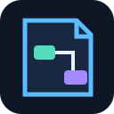
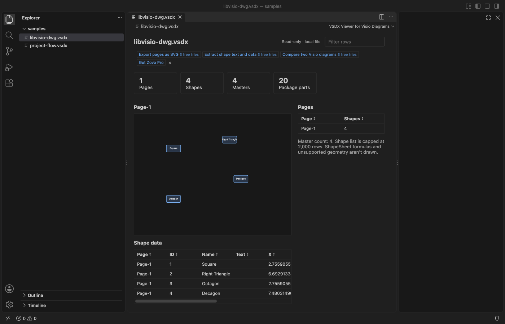

VSDX Viewer
VSDX Viewer for Visio Diagrams, a VS Code extension by Zovo
vsdx viewer in VS Code for Visio pages, shapes and text. Open a .vsdx, .vsdm or .vssx package without installing Office.
Free, MIT license. Needs VS Code 1.75.0 or newer. Extension ID zovo.zovo-vsdx-viewer, version 0.1.1.

- Free page view with shape names, text, size and position.
- Browse pages from the same package and filter the shape list.
- Files stay local and aren't changed.
Questions people ask
Is VSDX Viewer free?
Yes. VSDX Viewer is free and MIT licensed.
How do I install VSDX Viewer?
Click "Install in VS Code" above, or search for zovo.zovo-vsdx-viewer in the Extensions view.
Zovo Pro
Zovo Pro: USD 19 once.
- Export a page as SVG.
- Save shape text and geometry as CSV.
- Compare page names and shape text across two files.
Limits
The reader opens zipped Visio XML packages. It draws basic rectangles from shape bounds and shows text and shape data. When a shape omits its own size, the view uses a default size instead of reading the master shape. It doesn't draw connectors, master styling, custom geometry, themes, or legacy .vsd files.
Made by Zovo.
Install VSDX Viewer
Click the button to open VS Code and install it, or press Ctrl+P (Cmd+P on macOS) in VS Code and run ext install zovo.zovo-vsdx-viewer.
Free, MIT license. Needs VS Code 1.75.0 or newer. Extension ID zovo.zovo-vsdx-viewer, version 0.1.1.
Zovo Pro and support
Zovo Pro: USD 19 once, every Zovo viewer. It turns on the Pro tools in this extension and in the other Zovo extensions you use. The free features stay free.
After a card payment your license key shows on the next page. Paste it with the command "Zovo Pro: Enter a key".
You can also support the work with no Pro:
Need your format supported?
Open a format request with a sample file, and I reply there whether it can be done. For USD 299 once, through this GitHub Sponsors tier, I add your file format or a missing feature to this extension, with tests, within 7 days.